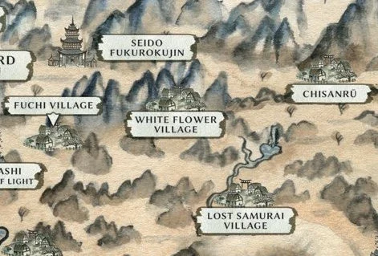
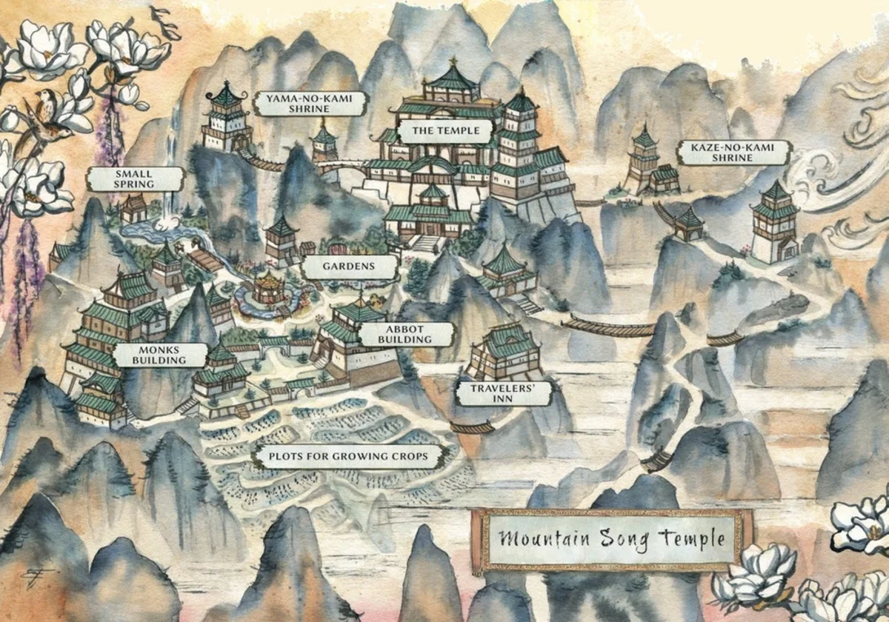

Every place charted here can be found on the Dragon lands map. Sites elsewhere in Rokugan will be added as the chronicle reaches them.
The Wrath of the Kami
An active volcano at the heart of Kinenkan province, and the fixed point around which this whole tale turns. In ordinary years its winter eruption is as dependable as the season itself — so dependable that the Agasha who study it consider a winter without eruption a troubling omen rather than a mercy. For twenty years the mountain has given them exactly that silence. Now, at last, the ground has begun to stir.
Kinenkan province · volcano · Agasha watch
Kyūden Togashi · The High House of Light
The ancestral seat of the Togashi family, set high in the northern Dragon peaks. From here the Tattooed Order keeps its mysteries and its abbots their counsel. It is the spiritual centre of Norikage's world, and the temple to which his reports are meant to return.
Northern Dragon mountains · seat of the Togashi

White Flower Village
White Flower Village
A small village of the high Dragon passes — and the place to which Norikage has been posted. Its numbers are thinning: samurai have been moving its peasants on to other settlements, and the reasons given do not entirely satisfy. This is where the chronicle begins, and where a monk sworn to Sincerity is asked, for the first time, to watch and to keep quiet.
High passes · Norikage's posting · the chronicle's opening

Mountain Song Temple
Mountain Song Temple
A temple of the high country near the Agasha and Mirumoto boundary, south of Shiro Agasha, with the silent volcano always somewhere on the horizon. A place of retreat and observance among the peaks.
Near Shiro Agasha · mountain temple
Seidō Fukurokujin
A shrine of the Dragon lands dedicated to Fukurokujin, Fortune of Wisdom and Longevity. It stands not far from the high passes where Norikage's posting lies.
Dragon lands · shrine
The Refuge of the Three Sisters
A rare shrine to Lord Moon hidden in the Dragon peaks, reached only by a dangerous ascent. It is said to look different to every visitor, and that three women — maiden, matron, and crone, the phases of the moon — will answer any question put to them, though always in riddles, and that misfortune befalls those who dare to ask.
High peaks · shrine to Lord Moon · perilous
Iron Mountain, the Furthest Fortress, Serpent's Tail Mine and the other named places of the Dragon map await their entries.